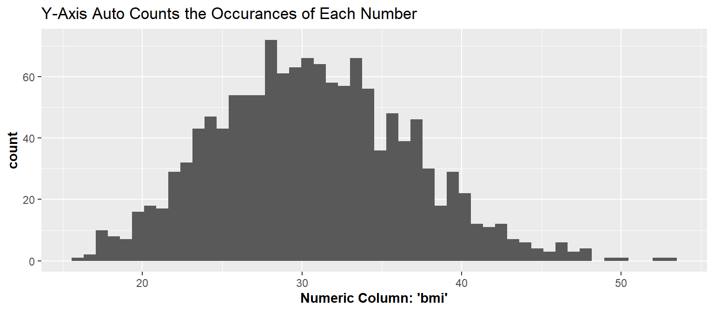
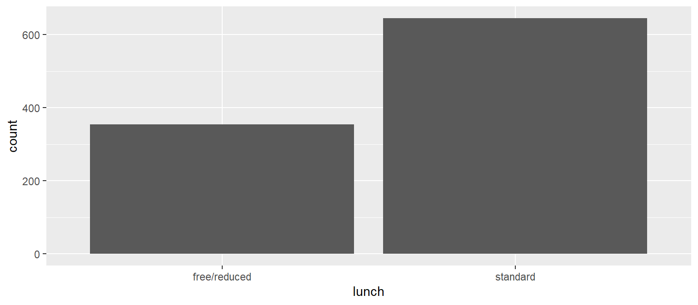
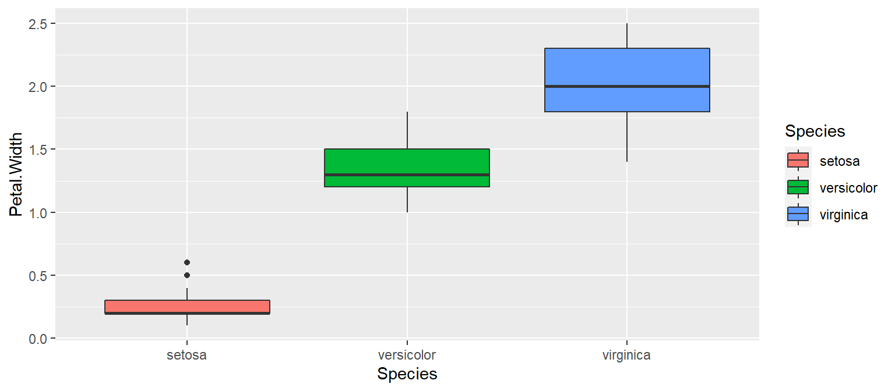

What kinds of data do we have? In general, we have:
numerical
categorical
Histogram: Counting the Number of Numeric Occurances
X: Numeric, Y: N/A
Code
ggplot(dat, aes(x=bmi))+geom_histogram(bins =50)+labs(title="Y-Axis Auto Counts the\n Occurances of Each Number",x="Numeric Column: 'bmi'")+theme(axis.title =element_text(face="bold"))

Bar Plot: Counting the Number of Categorical Occurances
ggplot(dat, aes(x=region))+geom_bar()+labs(title="", x="Categorical Column: 'region'", y="Auto Counts the Occurances\n of Each Category")+theme(axis.title =element_text(face="bold"))
Use the copy button in the top left corner of the code box below to get the data needed for the practice exercies. The code below may look weird depending on the size of your screen, but regardless use the copy button then paste it into your rscript.
Code
library(tidyverse)bob <-read_csv("https://raw.githubusercontent.com/BrighamEaquinto/brighameaquinto.github.io/master/datasets/StudentsPerformance.csv") %>%mutate(parent_education=`parental level of education`) %>%select(!`parental level of education`)
This is our dataset for this practice:
gender
race/ethnicity
lunch
test preparation course
math score
reading score
writing score
parent_education
female
group B
standard
none
72
72
74
bachelor’s degree
female
group C
standard
completed
69
90
88
some college
female
group B
standard
none
90
95
93
master’s degree
male
group A
free/reduced
none
47
57
44
associate’s degree
Exercise 1: Visualizing a Distribution using a Histogram
Prompt: Show the distribution of math scores
Instructions:
use the dataset from above called bob
use the `math score` column and make sure it is wrapped in tick marks. This is necessary when column names contain spaces.
Notice in the starter code we didn’t specify data, x, and y. ggplot doesn’t require explicitly specifying the arguments for data, x-axis, and y-axis. Those are implied by their position in the code below. This way of writing code require less typing and is very common.
For the remainder of the exercises, no starter code is provided. Look back at previous exercises for help if needed.
Exercise 5: Bar Chart
Prompt: Make a bar chart visualizing the types of lunches
Instructions:
Remake the plot below

Answer:
Code Solution
ggplot(data = bob, aes(x = lunch, fill = gender))+geom_bar()
Exercise 6: Scatter Plot
Prompt: Using the iris dataset (which is built into R and ready to use) make the scatter plot below. Look at the x-axis, y-axis, and legend for the columns to use.
Instructions:
Remake the plot below
Answer:
Code Solution
ggplot(iris, aes(Petal.Width, Petal.Length, color = Species))+geom_point()
Exercise 7: Boxplot
Prompt: Using the iris dataset (which is built into R and ready to use) make the boxplot below. Look at the x-axis, y-axis, and legend for the columns to use.
Instructions:
Remake the plot below

Answer:
Code Solution
ggplot(iris, aes(Species, Petal.Width, fill = Species))+geom_boxplot()
Exercise 8:
Prompt: Using the iris dataset (which is built into R and ready to use) make the histogram below. Look at the x-axis, y-axis, and legend for the columns to use.
Instructions:
Remake the plot below
Answer:
Code Solution
ggplot(iris, aes(Petal.Length, fill = Species))+geom_histogram()
Source Code
---title: "Lesson 5: Graphing 1/2"toc: truefig-align: centerfig-width: 8fig-height: 3.5code-copy: truecode-overflow: wrapcode-line-numbers: truecode-fold: truecode-tools: trueeval: truemessage: falsewarning: false# toc: true---{fig-align="center"}```{r}#| code-fold: true#| code-summary: "Data Used in examples below"#| message: false#| warning: falselibrary(tidyverse)dat <-read_csv("https://raw.githubusercontent.com/BrighamEaquinto/brighameaquinto.github.io/master/datasets/insurance.csv")```The four main plots we will go over today:- histogram- boxplot- scatterplot- bar plotWhat kinds of data do we have? In general, we have:- numerical- categorical ## Histogram: Counting the Number of Numeric Occurances###### X: Numeric, Y: N/A```{r}#| code-fold: trueggplot(dat, aes(x=bmi))+geom_histogram(bins =50)+labs(title="Y-Axis Auto Counts the\n Occurances of Each Number",x="Numeric Column: 'bmi'")+theme(axis.title =element_text(face="bold"))```## Bar Plot: Counting the Number of Categorical Occurances::: {.panel-tabset}## Method 1: geom_bar() #### X: Categorical, Y: Auto Counts Categories```{r}ggplot(dat, aes(x=region))+geom_bar()+labs(title="", x="Categorical Column: 'region'", y="Auto Counts the Occurances\n of Each Category")+theme(axis.title =element_text(face="bold"))```## Method 2: geom_col()#### X: Categorical, Y: Numeric```{r}plot_data <- dat %>%group_by(region) %>%summarise(count =n()) ggplot(plot_data, aes(x=region, y=count))+geom_col()+labs(title="", x="Categorical Column: 'region'", y="Numeric Column: 'count'")+theme(axis.title =element_text(face="bold"))```:::## Boxplot#### X: Categorical, Y: Numeric```{r}ggplot(dat, aes(x=region, y=bmi))+geom_boxplot()+labs(x="Categorical Column: 'region'", y="Numeric Column: 'bmi'")+theme(axis.title =element_text(face="bold"))```## Scatterplot#### X: Numeric, Y: Numeric```{r}ggplot(dat, aes(x=age, y=bmi))+geom_point()+labs(x="Numeric Column: 'Age'", y="Numeric Column: 'bmi'")+theme(axis.title =element_text(face="bold"))```# Practice ExercisesUse the copy button in the top left corner of the code box below to get the data needed for the practice exercies. The code below may look weird depending on the size of your screen, but regardless use the copy button then paste it into your rscript. ```{r}#| code-fold: showlibrary(tidyverse)bob <-read_csv("https://raw.githubusercontent.com/BrighamEaquinto/brighameaquinto.github.io/master/datasets/StudentsPerformance.csv") %>%mutate(parent_education=`parental level of education`) %>%select(!`parental level of education`)```This is our dataset for this practice: ```{r}#| code-fold: true#| include: false# knitr::kable(head(bob)) ```> |gender |race/ethnicity |lunch |test preparation course | math score| reading score| writing score|parent_education |> |:------|:--------------|:------------|:-----------------------|----------:|-------------:|-------------:|:------------------|> |female |group B |standard |none | 72| 72| 74|bachelor's degree |> |female |group C |standard |completed | 69| 90| 88|some college |> |female |group B |standard |none | 90| 95| 93|master's degree |> |male |group A |free/reduced |none | 47| 57| 44|associate's degree |## Exercise 1: Visualizing a Distribution using a Histogram**Prompt**: Show the distribution of math scores**Instructions**: - use the dataset from above called `bob`- use the \``math score`\` column and make sure it is wrapped in tick marks. This is necessary when column names contain spaces.- use `geom_histogram()` on line 2 **Starter Code:**```{r}#| eval: false#| code-fold: falseggplot(data = ___, aes(x =`____ _____`))+ geom____________``````{r}#| echo: falseggplot(data = bob, aes(x =`math score`))+geom_histogram()```**Answer**:```{r}#| code-fold: true#| code-summary: "Code Solution"#| eval: falseggplot(data = bob, aes(x =`math score`))+geom_histogram()```## Exercise 2: Visualizing Counts of School Degrees**Prompt**: Make a bar chart visualizing the count of school degrees **Instructions**: - use the dataset from above called `bob`- use `parent_education` column as the x axis- use `geom_bar()` in line 2**Starter Code:**```{r}#| eval: false#| code-fold: falseggplot(data = ___, aes(x = ________________))+ geom____________``````{r}#| echo: falseggplot(data = bob, aes(x = parent_education))+geom_bar()```**Answer**:```{r}#| code-fold: true#| code-summary: "Code Solution"#| eval: falseggplot(data = bob, aes(x = parent_education))+geom_bar()```## Exercise 3: Scatter Plot to Visualize Test Scores**Prompt**: Make a scatter plot visualizing the correlation of reading scores and writing scores **Instructions**: - use the dataset from above called `bob`- use the \``reading score`\` column as the x axis - use the \``writing score`\` column as the y axis- use the `gender` column as the color- use `geom_point()` in line 2**Starter Code:**```{r}#| eval: false#| code-fold: falseggplot(data = ___, aes(x =`_______ _____`, y = _______________, color = ______))+ geom________``````{r}#| echo: falseggplot(data = bob, aes(x =`reading score`, y =`writing score`, color = gender))+geom_point()```**Answer**:```{r}#| code-fold: true#| code-summary: "Code Solution"#| eval: falseggplot(data = bob, aes(x =`reading score`, y =`writing score`, color = gender))+geom_point()```## Exercise 4: Visualizing Distribution using Boxplots**Prompt**: Make a scatter plot visualizing the correlation of reading scores and writing scores **Instructions**: - use the dataset from above called `bob`- use the `lunch` column as the x axis - use the \``math score`\` column as the y axis- use `geom_histogram()` in line 2**Starter Code:**```{r}#| eval: false#| code-fold: falseggplot(___, aes(_____, ____________))+ geom__________```Notice in the starter code we didn't specify data, x, and y. ggplot doesn't require explicitly specifying the arguments for data, x-axis, and y-axis. Those are implied by their position in the code below. This way of writing code require less typing and is very common. ```{r}#| echo: falseggplot(bob, aes(lunch, `math score`))+geom_boxplot()```**Answer**:```{r}#| code-fold: true#| code-summary: "Code Solution"#| eval: falseggplot(bob, aes(lunch, `math score`))+geom_boxplot()```<br>For the remainder of the exercises, no starter code is provided. Look back at previous exercises for help if needed. ## Exercise 5: Bar Chart**Prompt**: Make a bar chart visualizing the types of lunches **Instructions**: - Remake the plot below ```{r}#| echo: falseggplot(data = bob, aes(x = lunch))+geom_bar()```**Answer**:```{r}#| code-fold: true#| code-summary: "Code Solution"#| eval: falseggplot(data = bob, aes(x = lunch, fill = gender))+geom_bar()```## Exercise 6: Scatter Plot**Prompt**: Using the `iris` dataset (which is built into R and ready to use) make the scatter plot below. Look at the x-axis, y-axis, and legend for the columns to use. **Instructions**: - Remake the plot below ```{r}#| echo: falseggplot(iris, aes(Petal.Width, Petal.Length, color = Species))+geom_point()```**Answer**:```{r}#| code-fold: true#| code-summary: "Code Solution"#| eval: falseggplot(iris, aes(Petal.Width, Petal.Length, color = Species))+geom_point()```## Exercise 7: Boxplot**Prompt**: Using the `iris` dataset (which is built into R and ready to use) make the boxplot below. Look at the x-axis, y-axis, and legend for the columns to use. **Instructions**: - Remake the plot below ```{r}#| echo: falseggplot(iris, aes(Species, Petal.Width, fill = Species))+geom_boxplot()```**Answer**:```{r}#| code-fold: true#| code-summary: "Code Solution"#| eval: falseggplot(iris, aes(Species, Petal.Width, fill = Species))+geom_boxplot()```## Exercise 8: **Prompt**: Using the `iris` dataset (which is built into R and ready to use) make the histogram below. Look at the x-axis, y-axis, and legend for the columns to use. **Instructions**: - Remake the plot below ```{r}#| echo: falseggplot(iris, aes(Petal.Length, fill = Species))+geom_histogram()```**Answer**:```{r}#| code-fold: true#| code-summary: "Code Solution"#| eval: falseggplot(iris, aes(Petal.Length, fill = Species))+geom_histogram()```<!-- Next week we'll get into colors, gg_text()/gg_label(), labs(), themes(), legend?, facet_wrap(), --><!-- geom_boxplot() is often used with geom_jitter() to make powerful visualizations. -->